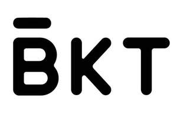

Trade Mark Journal No.2025/029 18 July 2025
UK00004191110 18 April 2025 (3,5,9,11,16,18,20,24,25,28,29,30,32,35,38,42)

- Class 3
- Cleansing milk for toilet purposes; Shampoos; Stain removers; Cosmetics for animals; Incense; Extracts of flowers [perfumes]; Dentifrices; Perfume oils; Cosmetics; Air fragrancing preparations; Sunscreen lotions; Cooling sprays for cosmetic purposes; Shoe cream; Grinding preparations; Perfumery; Cotton wool for cosmetic purposes; Cosmetics in the form of rouge; Scented water; Make-up; Beauty masks.
- Class 5
- Medicinal herbs; Extracts of medicinal plants; Insecticides; Protein dietary supplements; Microorganisms (Nutritive substances for -); Dietetic substances adapted for medical use; Food for babies; Medicinal drinks; Anticatarrhals for detoxification purposes; Pharmaceuticals; Diapers for pets; Albuminous foodstuffs for medical purposes; Sanitary napkins; Food for babies and infants; Repellents for dogs; Depuratives; Aromatic deodorisers for toilets; Tonics [medicines]; Sterilizing preparations; Chinese traditional medicinal herbs.
- Class 9
- Computers; Computer peripheral devices; Computer software; Cash registers; Loudspeakers; Cell phones; Computer hardware; Computer programs, downloadable; Computer software applications, downloadable; Smartwatches; Stands adapted for laptops; Downloadable software applications for mobile phones; Scales; Signal lanterns; Selfie sticks [hand-held monopods]; Holders adapted for mobile telephones and smartphones; Wires, electric; Battery chargers; Cameras [photography]; Eyeglasses.
- Class 11
- Lamps; Germicidal lamps for purifying air; Curing lamps, not for medical purposes; Flaming torches; Cooking apparatus and installations; Roasting apparatus; Electric food warmers; Refrigerating and freezing equipment; Air deodorizing apparatus; Air filtering installations; Air-conditioning installations; Fans [parts of air-conditioning installations]; Laundry driers, electric; Hair driers; Water heaters; Heating installations; Bath fittings; Water filtering apparatus; Disinfectant apparatus; Radiators, electric.
- Class 16
- Paper; Cardboard boxes; Writing paper; Hygienic paper; Place mats of paper; Cardboard; Printed matter; Cartons of cardboard for packaging; Adhesive tapes for stationery or household purposes; Teaching materials [except apparatus]; Instruction sheets; Lithographic works of art; Packing paper; Bags [envelopes, pouches] of paper or plastics, for packaging; Plastic bubble film for wrapping; Office perforators; Folders for papers; Stationery; Ink; Writing instruments.
- Class 18
- Handbags; Pocket wallets; Trunks [luggage]; Backpacks; All-purpose leather straps; Key cases; Business card cases; Vanity cases, not fitted; Collars for animals; Boxes of leather or leatherboard; Conference folders; Tool bags, empty; Travelling bags; School backpacks; Card cases [notecases]; Mountaineering sticks; Labels of leather; Imitation leather; Leather leads; Umbrellas.
- Class 20
- Furniture; Packaging containers of plastic; Bins, not of metal; Decorative mirrors; Plaited straw, except matting; Mannequins; Works of art of wood, wax, plaster or plastic; Display boards; Decorations of plastic for foodstuffs; Neck support cushions; Furniture fittings, not of metal; Cushions; Pillows; Bolsters; Sleeping mats of bamboo or straw; Camping mattresses; Chair cushions; Office seats; Ergonomic chairs for seated massage; Coffee tables.
- Class 24
- Fabric; Towels of textile; Plastic material [substitute for fabrics]; Labels of textile; Silk fabrics for printing patterns; Felt; Cloths for removing make-up; Bedsheets; Pillowcases; Bed linen; Household linen; Household textile piece goods; Drugget; Curtains of textile or plastic; Banners of textile or plastic; Textile material; Frieze [cloth]; Knitted fabric; Woollen fabric; Non-woven textile fabrics.
- Class 25
- Clothing; Boots; Shoes; Hats; Hosiery; Gloves [clothing]; Neckties; Neck tube scarves; Shawls; Trousers; Belts [clothing]; Shower caps; Underwear; Underpants; Bathing caps; Scarves; Leather belts [clothing]; Coats; Pajamas; Bath robes.
- Class 28
- Skis; Archery implements; Tennis balls; Body-building apparatus; Chess games; Fishing tackle; Video game machines; In-line roller skates; Strings for rackets; Toy models; Rosin used by athletes; Elbow guards [sports articles]; Yoga swings; Body-training apparatus; Dumb-bells; Electronic action toys; Knee guards [sports articles]; Sports equipment; Rowing machines; Jump ropes.
- Class 29
- Eggs; Meat; Fish, not live; Fruit, preserved; Meat, canned; Milk products; Oils for food; Nuts, prepared; Meat substitutes; Vegetables, preserved; Ham; Milk beverages, milk predominating; Fruit, processed; Sesame oil for food; Pickles; Sausages; Freeze-dried vegetables; Fruits, tinned; Meat-based snack food; Linseed oil for food.
- Class 30
- Rice; Wheat flour; Noodles; Bread; Pastries; Groats for human food; Starch for food; Condiments; Sugar; Honey; Tea; Coffee; Cocoa substitutes; Ice cream; Food flavourings; Doenjang [condiment]; Essences for foodstuffs; Pizzas; Peppers [seasonings]; Biscuits.
- Class 32
- Beer; Non-alcoholic fruit juice beverages; Malt beer; Barley wine [Beer]; Non-alcoholic beer; Non-alcoholic malt drinks; Non-alcoholic carbonated beverages; Non-alcoholic flavored carbonated beverages; Mineral water [beverages]; Soda water; Energy drinks; Sports drinks; Fruit juices; Vegetable juices [beverages]; Smoothies; Non-alcoholic beverages flavored with tea; Vegetable-based beverages; Soya-based beverages, other than milk substitutes; Whey beverages; Sports drinks containing electrolytes.
- Class 35
- Advertising planning; Business management consultancy; Marketing; Marketing, advertising, and promotional services; Providing business information; Import-export agency services; Commercial intermediation services; Commercial administration of the licensing of the goods and services of others; Business appraisals; Business auditing; Business research; Business organization consultancy; Business organization and operation consultancy; Organization of exhibitions for commercial or advertising purposes; Commercial information agency services; Provision of an on-line marketplace for buyers and sellers of goods and services; Consultancy regarding advertising communication strategies; Publicity agency services; Commercial information services; Promoting the goods and services of others.
- Class 38
- Radio, telephone, telegraph communication services; Providing internet chatrooms; Transmission of electronic mail; Videoconferencing services; Voice mail services; Rental of telecommunication equipment; Radio broadcasting; Cable television broadcasting; Satellite transmission; Transmission of database information via telecommunications networks; Telephone services; Teleconferencing services; Message sending; Provision of access to a global computer network; Paging services [radio, telephone or other means of electronic communication]; Electronic bulletin board services [telecommunications services]; Providing access to databases; Providing telecommunications connections to a global computer network or databases; Mobile radio communication; Providing online forums.
- Class 42
- Computer software design; Hosting the web sites of others on a computer server for a global computer network; Providing virtual computer systems through cloud computing; Creating and designing website-based indexes of information for others [information technology services]; Technology consultation in the field of artificial intelligence; Website design consultancy; Development of computer platforms; Data encryption services; Telecommunication network security consultancy; Computer network design for others; Consulting services in the field of software as a service [SaaS]; Blockchain as a Service [BaaS]; Internet security consultancy; Computer programming; Software as a service [SaaS]; Computer system design; Electronic data storage; Consultancy in the design and development of computer hardware; Computer services concerning electronic data storage; Computer system analysis.
Guangzhou LiuQuan Brand Management Service Co., Ltd.
Representative: CHENRUI GLOBAL LTD